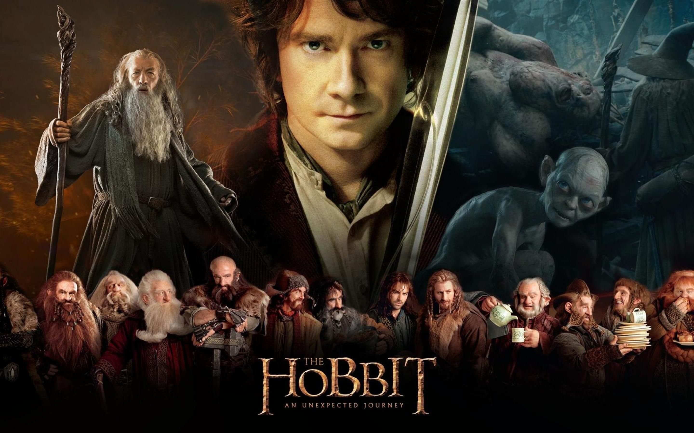
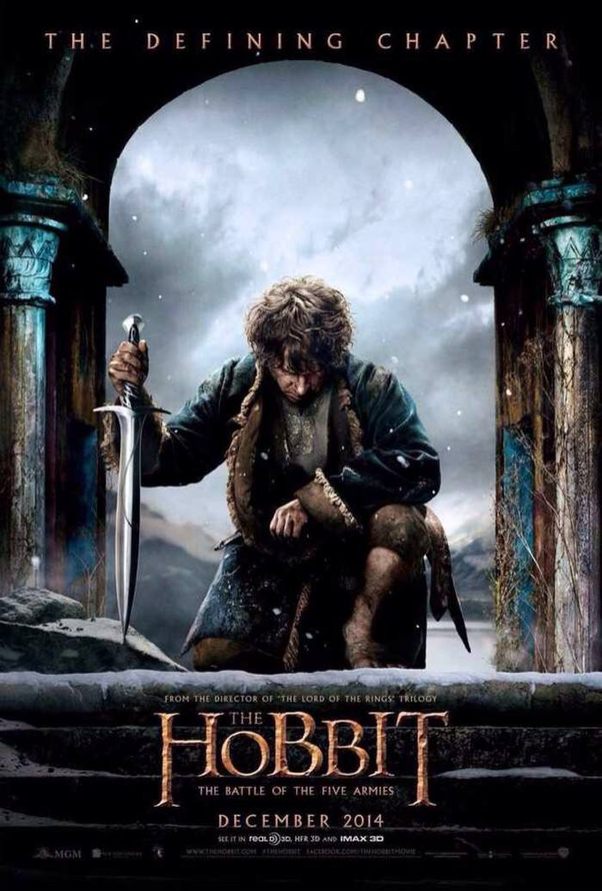
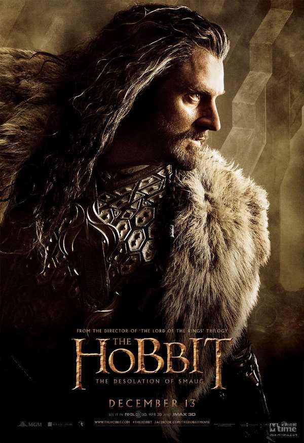

The Hobbit is a film series consisting of three high fantasy adventure films directed by Peter Jackson. They are based on the 1937 novel The Hobbit by J. R. R. Tolkien, with large portions of the trilogy inspired by the appendices to The Return of the King, which expand on the story told in The Hobbit, as well as new material and characters written especially for the films. Together they act as a prequel to Jackson's The Lord of the Rings film trilogy. The films are subtitled An Unexpected Journey , The Desolation of Smaug , and The Battle of the Five Armies .
It’s about the group of Bilbo Baggins and the 13 Dwarfs, led by Thorin Oaken shield and wizard Gandalf, to win back the Dwarf Kingdom of Erebor. In the journey, the group fought with giant spiders, orcs, and the dragon, Smaug.
|  |
A reluctant hobbit, Bilbo Baggins, sets out to the Lonely Mountain with a spirited group of dwarves to reclaim their mountain home - and the gold within it - from the dragon Smaug. In the hobbit, Thorin and twelve other Dwarves visited Bilbo Baggins on Gandalf’s advice to hire Bilbo as a burglar to steal treasure back from the dragon Smaug. |
|
Thorin is the leader of the Company of dwarves. The dwarves of the Lonely Mountain were forced to flee by the dragon Smaug while Thorin was quite young. Smaug had attacked the Lonely Mountain about 150 years before, and had taken both the dwarves’ mountain and their treasure. Thorin was determined to get the treasure back, and especially wanted the Arkenstone, the Heart of the Mountain. |
 |